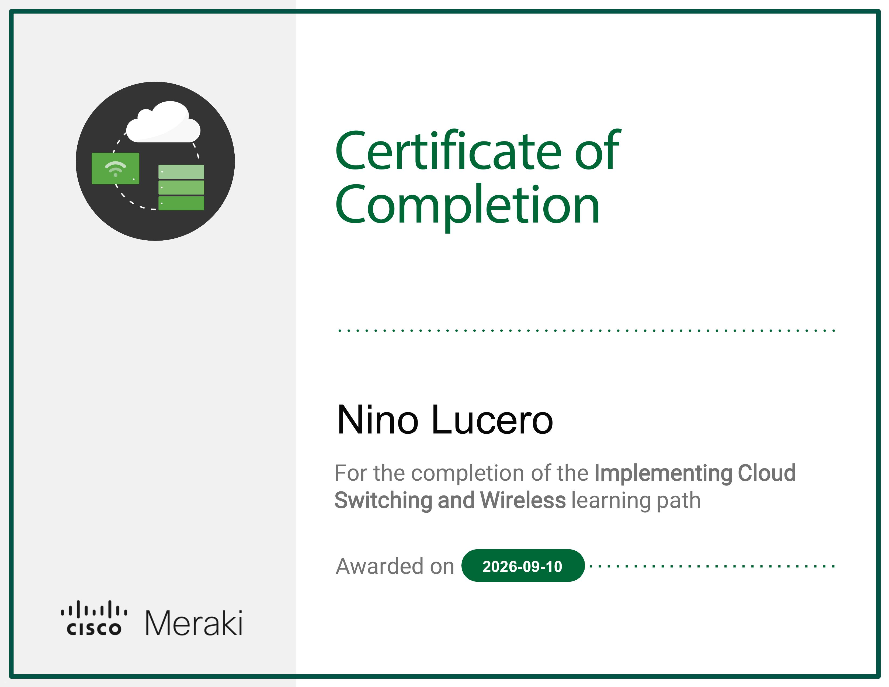
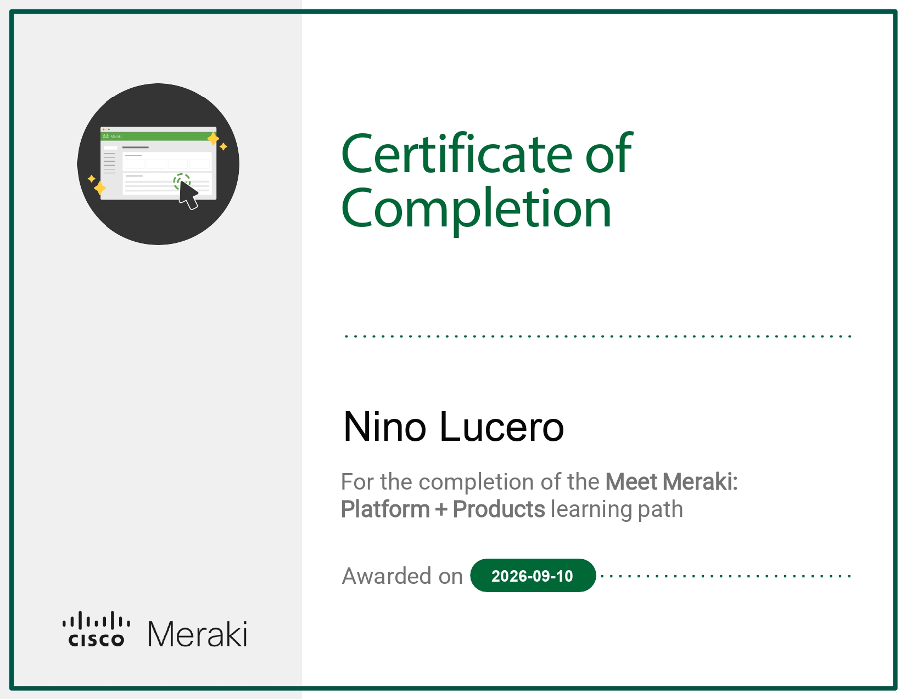
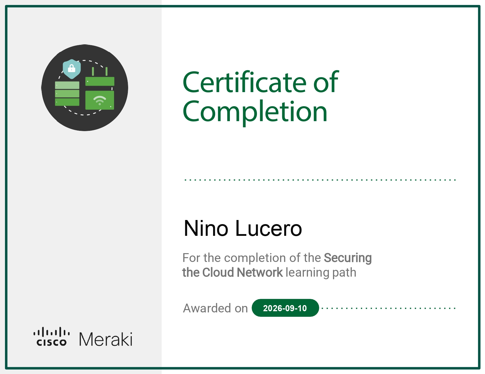

Hi, my name is Niño Lucero
I secure networks, analyze threats, and automate workflows.
I'm a Network Support Engineer with a passion for security operations. I keep enterprise infrastructure online, analyze SIEM logs for threats, and write code to automate the boring stuff.

About me
Diagnosing connectivity issues, configuring routers and switches, and keeping critical infrastructure online. Proven ability to resolve escalated tickets and minimize downtime.
Developing user-friendly websites with clean, maintainable code. Expanding into Full Stack Development to build custom tools and dashboards.
Leveraging a strong networking background to analyze logs, triage alerts, and investigate security incidents. Committed to protecting networks through continuous hands-on lab practice.
Utilizing Python and AI tooling to automate repetitive tasks, enrich threat intelligence, and build smart security workflows. Focused on increasing operational efficiency through automation.
Skills and toolkit
Networking
Security Operations
Programming & Scripting
Web Development
Tools & Platforms
Ticketing & CRM
Experience
Tier 2 Technical Support Engineer
2024 – Present- Maintained a 90%+ SLA across combined inbound calls and support tickets.
- Configured and managed enterprise network devices via Cisco Meraki, Ruckus Cloud, and CLI (PuTTY) to ensure seamless connectivity.
- Reduced Wi-Fi login failures by implementing improved authentication protocols.
- Resolved escalated Tier 1 support tickets, specializing in complex VLAN routing, switching, and connectivity issues.
- Remotely diagnosed and resolved down network equipment by coordinating with on-site technicians, minimizing downtime.
Tier 1 Technical Support Engineer
2023 – 2024- Maintained a 90%+ SLA across combined inbound calls and support tickets while providing Tier 1 technical support and troubleshooting.
- Monitored equipment status, uptime, and client connections to proactively identify and resolve issues.
- Diagnosed and resolved access point (AP) failures, improving wireless stability for end-users.
- Maintained and updated technical documentation and knowledge base articles to streamline resolution.
Cybersecurity Analyst — Independent Labs
2025 – Present- Investigating simulated security incidents and triaging alerts in SIEM environments using platforms like TryHackMe, HackTheBox, and Blue Team Labs.
- Analyzing logs and network traffic (Wireshark, PCAP) to identify Indicators of Compromise (IOCs) and map adversary techniques to the MITRE ATT&CK framework.
- Documenting incident response reports and remediation steps for phishing, malware, and brute-force attacks.
AI & Automation Engineer — Independent Projects
2025 – Present- Developed Python scripts to automate repetitive IT and security tasks, such as log parsing and IOC extraction.
- Integrated LLM APIs (OpenAI, Claude) to build workflows that summarize security alerts and automate threat intelligence enrichment.
- Designed automation pipelines to streamline data entry, reporting, and other manual processes.
Web Developer — Independent Projects
2024 – Present- Designed, developed, and deployed responsive websites and small web applications using HTML, CSS, JavaScript, and modern frameworks for personal practice.
- Managed the full development lifecycle, from translating design mockups into clean, maintainable code to deploying via GitHub Pages and Vercel.
- Built custom API integrations to practice automating workflows and improve personal development efficiency.
Featured projects
Phishing Alert Triage & Incident Response
SOC Analyst Project
Investigated a simulated phishing email reported by an end-user. Analyzed email headers, safely extracted malicious URLs, and utilized VirusTotal for reputation analysis. Confirmed a credential-harvesting attempt, extracted Indicators of Compromise (IOCs), mapped the attack to MITRE ATT&CK (T1566.002), and documented formal remediation steps.
Automated Threat Intelligence Enrichment
AI & Automation ProjectBuilt a Python script that reads a list of IP addresses from a text file, queries the VirusTotal API for each one, and outputs a formatted CSV report with threat scores and vendor detections. Automates a repetitive SOC task that would otherwise take 30+ minutes per batch.
Layer 2 Security Hardening
Networking ProjectHardened the access layer against internal and external threats. Implemented port security to prevent MAC flooding, DHCP snooping to block rogue servers, and Dynamic ARP Inspection (DAI) to stop man-in-the-middle attacks at the switch level.
Departmental Segmentation & Access Control
Networking Project


Architected a segmented VLAN network to enforce least-privilege access between HR and Sales departments. Configured 802.1Q trunk links, inter-VLAN routing, and ACLs to block unauthorized traffic. Simulated a VLAN mismatch causing a broadcast storm and diagnosed it using show spanning-tree and show interfaces.
Secure Small Office Network Deployment
Networking Project


Designed and secured a small office LAN with a focus on network defense. Implemented port security to prevent MAC flooding, configured DHCP snooping to block rogue servers, and applied ACLs to restrict guest access to sensitive HR subnets. Simulated a rogue DHCP attack and successfully mitigated it.
Portfolio Website with AI Integration
Web Development Project


Developed a responsive, accessible portfolio website with clean, maintainable code. Integrated an AI-powered assistant to answer visitor questions about my skills and experience. Built with HTML, CSS, and JavaScript, and deployed via GitHub Pages.
Certifications & Credentials
Earned Certifications

Implementing Cloud Switching and Wireless
Cisco Meraki
Issued: September 2026

Meet Meraki: Platform + Products
Cisco Meraki
Issued: September 2026

Securing the Cloud Network
Cisco Meraki
Issued: September 2026
In Progress
Certified in Cybersecurity (CC)
ISC2
Expected: March 2026
Foundational security principles, access control, network security, and incident response.
Fortinet NSE 1 & 2
Fortinet
Expected: January 2026
Network security fundamentals, firewall concepts, and SOC operations basics.
CompTIA Security+
CompTIA
Expected: June 2026
Threat detection, incident response, cryptography, and security architecture.
Contact Me
I'm actively looking for opportunities in security operations, network engineering, and technical virtual assistance. Whether you're hiring for blue team work or need a reliable VA with a technical edge — my inbox is open.